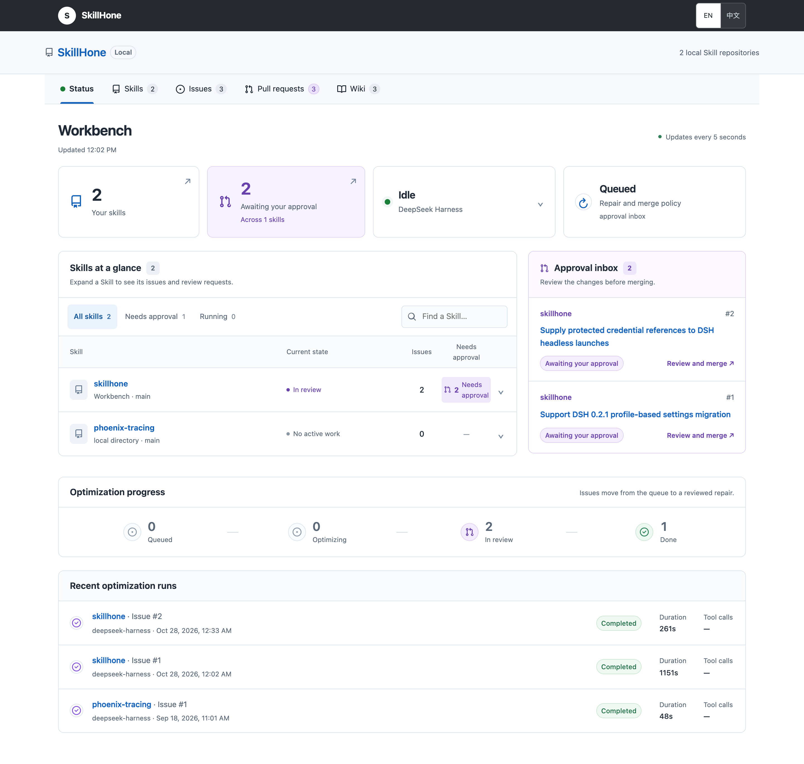

Improve the complete Skill
Work on the repository that makes the Skill useful: its entry instructions, executable tools, reference material, assets and tests.
SkillHone↗
Turn real failures into tested improvements. SkillHone evolves complete Skill repositories and preserves every decision, so the next run builds on the last.
Codex · Claude Code · Cursor · Pi · ZCode
Real failure → tested repair → reviewable PR
Paper results relative to its commercially backed deep-research baseline. SkillHone uses a raw open-web setting without a pre-integrated search stack. See the comparison and experimental context.
Give this prompt to Codex, Claude Code, Cursor, Pi or ZCode. The installation guide covers setup and verification.
Install SkillHone from https://github.com/Tencent/SkillHone, following docs/install/skillhone.md. Make the CLI and bundled Skills available to this Agent, use the documented --install-links=true Git installation command, and verify the installation.
Recording and reviewing Issues, PRs and Wiki records needs no model credential. Install and configure the optional DeepSeek Harness runtime when you want it to execute repairs.
npm install -g --install-links=true git+https://github.com/Tencent/SkillHone.git#main
skillhone --help
skillhone setup --agent codexReplace codex with your Agent runtime. Follow the guide to configure models and verify a real repair-tool round trip.
A missing script, a broken reference, an outdated API: real work exposes gaps that a polished instruction file alone cannot solve. SkillHone connects those failures to complete, reviewable repairs.
Work on the repository that makes the Skill useful: its entry instructions, executable tools, reference material, assets and tests.
Record the diagnosis, revision, evidence and outcome. Future Agents can inspect earlier fixes and rejected alternatives across sessions.
Follow a failure through its Issue, regression test, repair run and local PR. Decide from the tests and diff, with a Wiki record to return to.
The original two-minute research introduction explains persistent decision history and cross-backbone transfer.
Original research demonstration
The local workbench puts Skills and their repair records in one place.

Capture a reproducible failure with sanitized evidence in a local Issue.
Attach a focused regression test for the behavior that needs to change.
DeepSeek Harness works on an isolated branch and runs the linked tests.
Inspect the local PR, its diff, tests and run before approving a merge.
Keep the linked outcome and Wiki record for the next Agent or session.
Follow a public example. The Phoenix tracing Skill referenced four documents that were never shipped. Inspect the original Issue #2567, the merged fix #2568, and the reproducible SkillHone walkthrough.
Choose the workflow that matches the evidence you have.
Start with a reproducible Skill defect.
Use runtime maintenance for missing files, broken scripts, stale instructions and API drift. Review the linked regression test and local PR.
Runtime maintenance workflowStart with a frozen evaluator in a separate repository.
Measure a baseline, iterate on candidates, validate the proposed improvement and retain the decision history. Evaluation data stays in the Eval repository.
Evaluation-driven workflowAgent skills extend language-model agents with task-specific procedures, scripts, and references — but the tasks and environments they target continually change. Existing methods polish skills in bounded runs and retain only the final artifact, discarding the decision history that later agents need to interpret prior revisions, evaluations, and rejected alternatives.
SkillHone represents each development step as a structured decision record. When the environment shifts, later subagents can inspect the persistent history to decide whether a failure is new, whether a similar fix was already attempted, and why an alternative was rejected — preventing redundant edits and accidental rollbacks of working repairs.
A diff says how files changed. A decision record links that change to the problem it targeted and the evidence used to evaluate it. Long-lived skills need the latter.
SkillHone records diagnoses, revisions, evidence, and outcomes under separated roles — portable across Claude Code, Codex, and Hermes runtimes.
Improves skill development across public benchmarks and internal deployments, with skill bundles that transfer across execution backbones with no re-optimization.
SkillHone splits each step into optimization and evaluation dispatches. The dispatcher is a message router that creates subagents on demand and records accepted outcomes — making the optimizer/evaluator split structural rather than prompt-imposed.

Figure 1. At each step, fresh role-bounded subagents are dispatched. Routed evidence, repository operations, and recorded outcomes form a persistent decision history that later agents reuse.
Each subagent is created on demand, assigned to a permission-bounded team, and granted only the actions it needs for that dispatch. The optimizer/evaluator split is enforced by what each team can read or write.
Reads redacted reports and decision history; writes diagnoses. No access to probe targets or validators.
Searches external resources for reusable patterns when a revision needs them. No access to probe targets or validators.
Edits the current skill and proposes typed revisions. No access to unredacted evaluation assets.
Reviews pending changes using redacted evidence and prior decision records. No access to probe targets.
Accepts or rejects candidate revisions according to recorded evidence. No access to unredacted evaluation assets.
Runs the current skill on probe items. May inspect oracle targets, validators, and traces. No skill-repo write access.
Analyses outcomes and traces; updates evaluation diagnostics. No skill-repo write access.
Produces redacted problem reports for the optimization side. No revision-decision authority.
Checks probe metadata, traces, and redacted reports for evaluation-side consistency. No skill-repo write access.
Creates subagents and routes artifacts between repositories. No direct skill edits; no access to unredacted probe targets.
Published in EMNLP 2026 Industry Track. The results below are from the paper's evaluation, with its stated baselines and settings.
Under the raw open-web setting, agents receive no pre-integrated search tools and must organise search, parsing, extraction, and recovery through portable skill bundles. SkillHone leads both averages, despite the baseline keeping its commercial search stack.
| Setting | System | GAIA | WebWalkerQA-EN | ||||||
|---|---|---|---|---|---|---|---|---|---|
| L1 | L2 | L3 | Avg. | Easy | Med. | Hard | Avg. | ||
| Curated search | deep-research agent | 61.9 | 47.0 | 26.3 | 48.8 | 58.5 | 62.3 | 67.1 | 63.2 |
| Raw open-web | Existing-Skills | 64.3 | 33.3 | 21.1 | 41.7 | 51.2 | 48.5 | 52.6 | 50.2 |
| Skill-Creator | 64.3 | 37.9 | 21.1 | 44.1 | 36.6 | 36.9 | 40.8 | 38.1 | |
| Hermes-SE | 73.8 | 40.9 | 31.6 | 50.4 | 53.7 | 51.5 | 55.3 | 53.0 | |
| SkillHone (Ours) | 76.2 | 66.7 | 31.6 | 64.6 | 53.7 | 69.2 | 68.4 | 66.4 | |
Table 1. Main results. Bold marks the best score per column. SkillHone runs without curated search yet achieves the strongest averages.

With zero re-optimization on the new backbone, the SkillHone skill bundle transfers from Qwen3.6-35B-A3B (development) directly to Claude Sonnet 4.6 (transfer).
SkillHone reaches 72.4% on GAIA under Sonnet 4.6 — beating Hermes-SE by 10.2 pp, Existing-Skills by 15.7, and Skill-Creator by 24.4. The gain reflects the skill procedure, not fitting to one model.
No decision history keeps role-separated subagents but starts each step from the latest skill artifact alone. No role separation keeps decision history but lets a single subagent access the skill repo and unredacted evaluation assets jointly.
| Variant | GAIA | WebWalkerQA-EN |
|---|---|---|
| SkillHone (full) | 64.6 | 66.4 |
| w/o decision history | 51.2 (−13.4) | 55.5 (−10.9) |
| w/o role separation | 58.2 (−6.4) | 61.1 (−5.3) |
Table 2. Ablation. Decision history is the larger lever.
Probe-split trajectories for SkillHone vs. Hermes-SE across five optimisation iterations from a shared seed skill. SkillHone improves 30% → 70% while recovering from two regressed revisions through targeted follow-up edits. Hermes-SE accepts or rejects whole prompt candidates under a scalar validation signal.

Figure 2. Later revisions can target the offending part of a change while retaining useful edits — only possible when prior decisions are still inspectable.
Beyond public benchmarks, SkillHone is deployed on internal tool-mediated analysis scenarios with exact-match evaluation. It improves six of seven seeded skills; gains concentrate where the initial procedure leaves reusable analysis steps underspecified.
Table 3. Optimised minus seeded accuracy on recurring internal scenarios.
ACL Anthology · arXiv · Download BibTeX
@inproceedings{li-hu-2026-skillhone,
title = "{S}kill{H}one: A Harness for Continual Agent Skill Evolution Through Persistent Decision History",
author = "Li, Zhiwei and Hu, Yong",
editor = "Atanasova, Pepa and Haffari, Gholamreza and Wang, Minghan",
booktitle = "Proceedings of the 2026 Conference on Empirical Methods in Natural Language Processing: Industry Track",
month = oct,
year = "2026",
address = "Budapest, Hungary",
publisher = "Association for Computational Linguistics",
url = "https://aclanthology.org/2026.emnlp-industry.105/",
pages = "1819--1829",
ISBN = "979-8-89176-460-6"
}
SkillHone starts from the existing repository and evidence of a failure or evaluation gap. A revision can change instructions, scripts, references, assets and tests, while preserving the decisions behind each attempt.
The local CLI is runtime-neutral. Codex, Claude Code, Cursor, Pi and ZCode are documented installation targets; other CLI-capable Agents can call the same workflow. DeepSeek Harness is the managed repair executor.
Review is the default. Automatic local merge is an explicit opt-in and requires linked tests to pass. Pushing is a separate user-authorized action. A copy-mode import also has an explicit synchronization step.
The reported improvements belong to the paper's benchmark settings and baselines. For your own Skill, use its regression tests or a separate evaluator to measure the effect of a proposed change.
SkillHone uses DeepSeek Harness as its repair executor. It works on isolated branches and runs linked tests; SkillHone keeps the resulting local PR, evidence and decision history together.